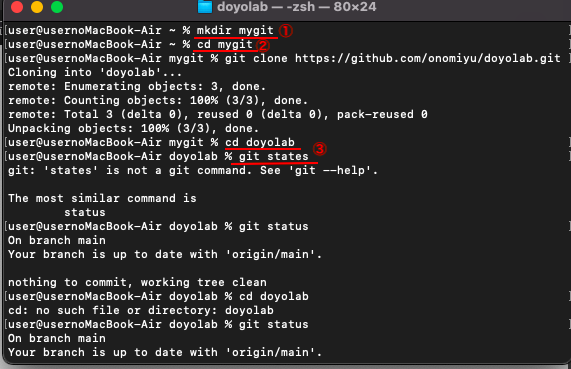
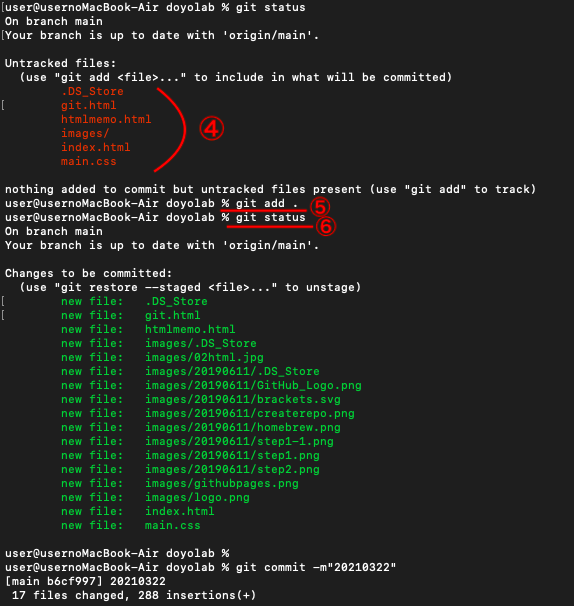
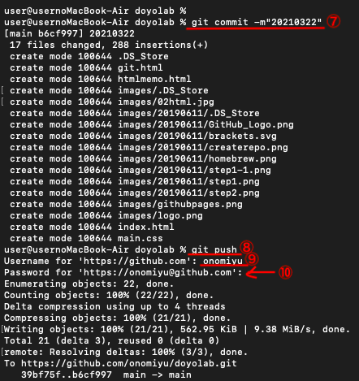

①ターミナルに mkdir mygit と打つ
→この操作でホームディレクトリにmygitのフォルダを作る。
②ターミナルに cd mygit と打つ
矢印この操作でmygitのファイルに移動できる
③ターミナルに cd doyolab と打ち git status と打つ
→この操作でmygit内にあるdoyolabのファイルに移動し、statusの確認ができる。

④statusを確認するとdoyolabの中に入っているファイルが赤文字で表示される。
⑤git add . と打つ。
→これで上で出てきた赤文字のファイルたちをパソコンのdoyolabに送られる。
⑥git status と打ちもう1度ステータスを確認すると、緑文字が出てくる。

⑦git commit -m"20210322" と打つ。
→この操作でgit上にあるdoyolabのファイルに20210322という名前のファイルできる。
⑧git push と打つ。
→ターミナルで変更した部分がHPに反映される。
⑨GitHubで設定したユーザネームを入力してエンターを押す。
⑩GitHubのアクセストークンをコピーして貼り付ける。

もう一度doyolabのステータスを確認して、赤文字で 「modified: index.html」と表示されていることを確認する。
VScodeで自分のパソコンのmygit doyolab のファイルから index.html ファイルを開く。
HTMLについて ここを参考にHPを書く。
もしくは…
git.htmlをファイル内でコピーして、それをVScodeで開く。そのコードのbody内を少しずつ自分で変えて作る。
➀コードを書いたらアップルマークのバーにあるファイルから保存する
②ターミナルで
git add .
git commit -m"(適当なファイル名)
git push
①~②の工程をコードを書いてHPに反映させて見たい時に行う。
※適当なファイル名は同じものを入れないようにする。ナンバリングした方がわかりやすい。
ex) "20210322-1" "20210322-2" など